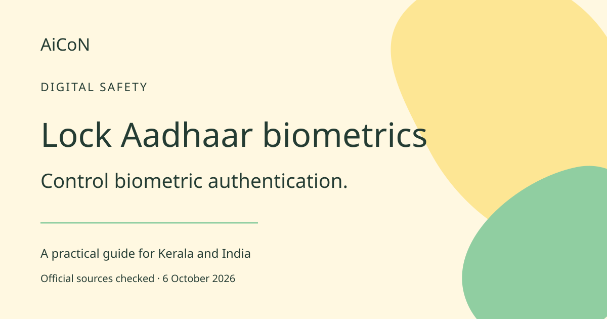

How to lock and unlock your Aadhaar biometrics
Block fingerprint, iris and face-based Aadhaar authentication while locked. This is a safety control, not protection against every identity or banking scam.

What does the lock do?
Biometrics are physical features used to verify identity. UIDAI, the Aadhaar authority, says this lock covers fingerprint, iris and face-based Aadhaar authentication. Once locked, an organisation cannot complete these authentication modes. Error code 330 indicates that biometrics are locked. The feature does not delete your Aadhaar number or stop every banking transaction. It does not make a phishing link safe or protect an OTP you give away.
Who can use it in India?
UIDAI says a mobile number registered with Aadhaar is essential. A SIM in your name is not proof that the same number is registered with Aadhaar. If yours is not registered, use the authorised enrolment or mobile-update route. The feature applies to Aadhaar holders, including Kerala residents. Check whether an upcoming service needs biometric authentication before arriving at the counter.
How to lock, step by step
- Start from uidai.gov.in or the official myAadhaar portal. Avoid links from callers selling Aadhaar security.
- Find Biometric Lock/Unlock. Do not select a different Aadhaar-number locking feature by mistake.
- Complete the official verification using your registered mobile number. Enter any OTP only on the official screen.
- Read the warning and enable biometric locking. Complete the portal's confirmation.
- Check the resulting status. Keep any private note safely and do not publish screenshots containing Aadhaar or phone details.
How to unlock when needed
- Return to the official biometric-lock service or a channel listed by UIDAI.
- Follow its registered-mobile verification flow.
- Choose carefully: UIDAI distinguishes temporary unlock from disabling the locking system. They are not the same action.
- Complete the intended service within the period displayed. This guide does not promise a fixed number of minutes.
- Check the final lock status afterward rather than assuming that the intended setting took effect.
Free, paid and service limits
Use the official self-service facility; no paid security-agent subscription is needed. The FAQ checked does not publish a price table, so do not infer that every Aadhaar service is free. Mobile-number updates, centre services and other changes have their own rules and possible charges. UIDAI lists its website, mAadhaar, enrolment centres and Aadhaar Seva Kendras as unlocking channels. Follow the current instructions for the channel you choose.
Safety limits and earlier-post correction
The September 29 headline suggested the setting stops misuse. The supported claim is narrower: it blocks biometric Aadhaar authentication while locked. Protect account access and OTPs separately. A fraudster may try a non-biometric route or persuade you to unlock. This guide is based on UIDAI's published service explanation, not a test of every signed-in screen. Labels can change.
Frequently asked questions
Does it cover face authentication?
Yes. UIDAI's current FAQ lists fingerprint, iris and face.
Can I leave it locked?
Yes, but an intended service needing biometric Aadhaar authentication will require an appropriate unlock.
What does error 330 mean?
UIDAI describes it as the biometrics-locked result during biometric authentication.
Is this the same as locking my Aadhaar number?
No. They are different controls. Follow instructions for the exact feature you want.
Sources: UIDAI biometric-lock FAQ. UIDAI online services. Checked 6 October 2026.